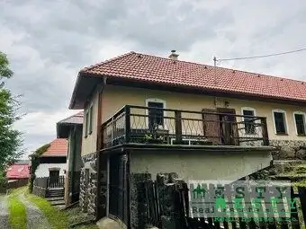
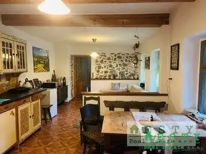
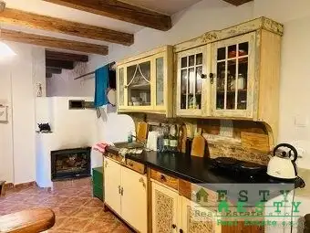
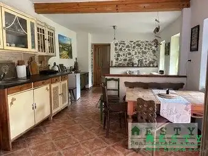
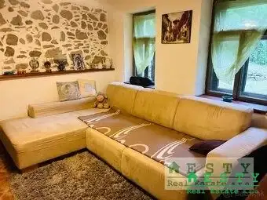
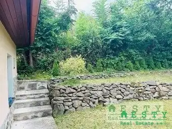
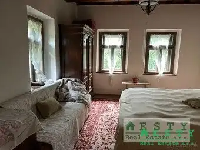
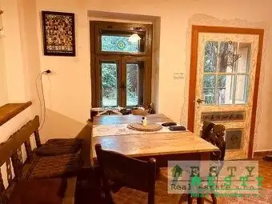

PREDAJ, chalupa Malá Lehota, ESTY Real Estate s.r.o.
Malá Lehota








- Plocha78 m²
- StavKompletná rekonštrukcia
- VlastníctvoOsobné
O nehnuteľnosti
ESTY Real Estate s.r.o. ( licencovaný realitný maklér 0918 509 845 tazka.eva@estysro.sk) ponúka vo výhradnom zastúpení klienta na predaj romantickú chalupu v nádhernom prostredí Malej Lehoty v okrese ŽarnovicaPREDMET PONUKY:* podpivničený rodinný dom 78m2, stojí na menšom pozemku o výmere 276 m2* prístup na slnečný pozemok orientovaný na južnú stranu je z miestnej asfaltovej komunikácie* pozemok je ohraničený plotom, menšia kaskádovitá záhrada s trávnatým porastom hneď pri dome* chalupa je kompletne zrekonštruovaná, strecha je škridlová, vymenená v r. 2019* dom je pripojený na elektrinu (220/380V), vodu,odpady sú riešené sepptikom, studňa je v blízkosti chalupy* vykurovanie je na tuhé palivo pecou v kuchyni, ktorá vykúri celé podlažie, taktiež sú tam elektrické konvektory a spodnom podlaží je krb* dom je podpivničený, má dve podlažia a neobytné podkrovieDISPOZÍCIA DOMU:* samostatný vchod do domu je z oploteného pozemku, pri dome je menšia,ale útulná záhradka* vstup do domu je po schodíkoch, vstupná chodba do kuchyne s obývačkou, spálne* pod domom je pivnica a technická miestnosť, kde je umiestnený krb s možnosťou vykurovania zospodu* na 1.podlaží v dome sa nachádza priestranná obývačka s kuchyňou, spálňa, kúpeľňa s wc a práčkou* izby sú priechodné, okná a dvere sú drevené, izby sú veľmi citlivo a štýlovo zariadené* v izbách sú podlahy -keramická dlažba v kúpeľni, keramické obklady, v izbách parkety* dom je kúpou ihneď voľnýCENA: 134 000 €Cena je vrátane provízie, kupujúci neplatí žiadne poplatky spojené s predajom a prevodom nehnuteľnosti.V cene nehnuteľnosti je okrem sprostredkovania, predaja a kúpy:- uhradenie správneho poplatku za návrh na vklad kúpnej zmluvy do katastra nehnuteľností- uhradenie poplatku za osvedčenie podpisov na kúpnej zmluveAktívne riadime celý predaj, vrátane odovzdanie nehnuteľnosti, odpisy meračov a prehlásenie u správcu a dodávateľov energií.DOPORUČENIE MAKLÉRA:* nádherná menšia romantická chalupa v úžasnej okolitej prírodnej scenérií Malej Lehoty* dispozícia domu na rovinatom pozemku priamo v srdci prírody* do centra mesta Nová Baňa 18 km,* blízkosť napojenia na diaľničný privádzač R1, BB 60km, NR 60km* kompletná občianska vybavenosť okresného mesta Nová Baňa, zdravotnícke zariadenia, školy, škôlky, obchody, úrady, pošta* počas celého roka možnosť využitia okolitej prírody na turistiku, Drozdovo, lyžovanie, plávanie v blízkom jazere Tajch, bicyklovanie* určite odporúčam túto nádhernú nehnuteľnosť!
Parametre
- Druh
- Chata, drevenica, zrub
- Dátum zverejnenia
- 12. 06. 2025
- Energetický certifikát budovy
- nie je
- Orientácia
- Juhovýchodná
- Plocha pozemku
- 276 m²
- Počet nadzemných podlaží
- 1
- Rok poslednej rekonštrukcie
- 2021
- Rok výstavby
- 1957
- Stav nehnuteľnosti
- Kompletná rekonštrukcia
- Terén pozemku
- Mierne svahovitý
- Typ
- Predaj
- Typ konštrukcie
- Kamenná
- Vlastníctvo
- Osobné
- Zastavaná plocha
- 100 m²
- Úžitková plocha
- 78 m²